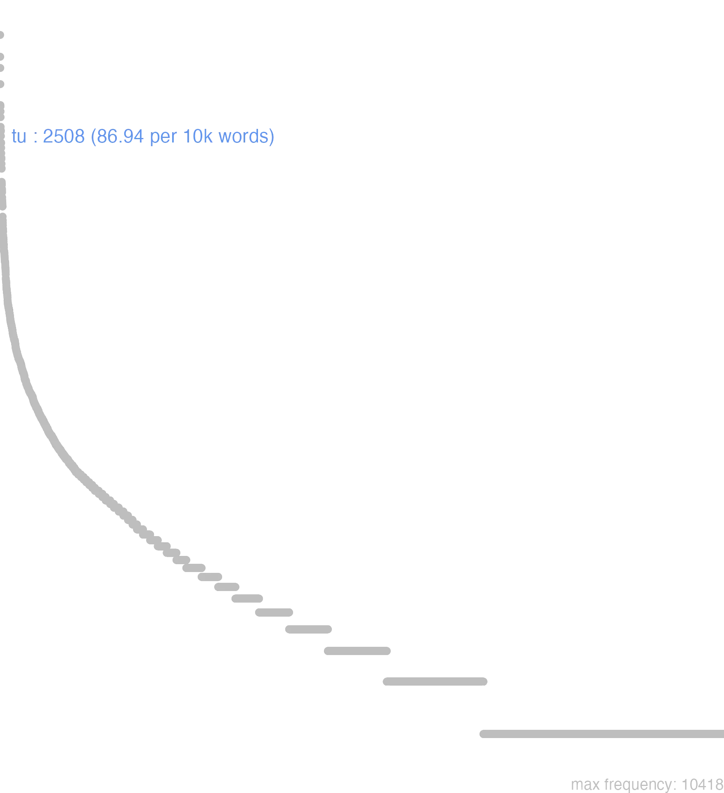

176 tu
176.0.0.1 bases lexicais
id: http://lila-erc.eu/data/id/lemma/129131
classe: pronome
paradigma: pronominal
outras grafias: tute, tutemet, tutepte, tuti, tutimet, tutin, tutipte
variantes do lema:
no data
tē
tēcum
tētĕ
tū
tŭī
tĭbi
tūtĕ
no data
176.0.0.2 dicionários tradicionais
tē
acus. e abl. de tu.
tecum
= cum te.
arc. = te Plaut. Bac. 571.
tēte
acus. e abl. de tute.
tibi
dat. de tu.
tis
gen. arc. do pr. n. tu.
tū tuī, tibi, tē
pron. pess.
Pode vir reforçado: 1 por -te: tute Cíc. Rep. 1, 59, tete Cíc. Tusc. 2, 63 tutin? = tutene Plaut. Mil. 299; 2 por te e met tutimet Ter. Heaut. 374, tutemes Lucr. 1, 102. Genit. pl. arc. tis Plaut. Mil. 1.034.
gen. de tu.
tūte
pron. pess. forma de reforço, com a enclítica -te
v. tu.
acus. e abl. de tu.
tecum
= cum te.
1 Contigo.
tedarc. = te Plaut. Bac. 571.
tēte
acus. e abl. de tute.
tibi
dat. de tu.
tis
gen. arc. do pr. n. tu.
tū tuī, tibi, tē
pron. pess.
Pode vir reforçado: 1 por -te: tute Cíc. Rep. 1, 59, tete Cíc. Tusc. 2, 63 tutin? = tutene Plaut. Mil. 299; 2 por te e met tutimet Ter. Heaut. 374, tutemes Lucr. 1, 102. Genit. pl. arc. tis Plaut. Mil. 1.034.
1 Tu, te, ti Cíc. De Or. 2, 94.
tuīgen. de tu.
tūte
pron. pess. forma de reforço, com a enclítica -te
v. tu.
1 Tu mesmo Cíc. Rep. 1, 59.
tutemet
e tutimet
v. tu. tutin
v. tu.
no data
Tu tui tibi -te
pron. com. gen.
pron. com. gen.
1 Cic. tu.
Tute1 Cic. tu mesmo.
dat. Varr. por Tibi Tibe Plaut. genit. do plural de Tu Vostrorum Plaut. genit. do sing. de Tu Tis
Te
ult. br.
1 ajunta-se ao pronome tu
[EXEMPLOS]
1
tute vos mesmo
ult. br.
1 vos mesmo
Tecum
aduerb.
pronomen.
aduerb.
1 contigo
Tupronomen.
1 tu
176.0.0.3 dados de corpus
![This chart plots collocate by scoreSUBST, for the headword tu here are all the values plotted: collocate: ad; scoreSUBST: 0. collocate: ab; scoreSUBST: 0. collocate: cum; scoreSUBST: 0. collocate: si; scoreSUBST: 0. collocate: qui; scoreSUBST: 0. collocate: scribo; scoreSUBST: 0. collocate: ego; scoreSUBST: 0. collocate: hic; scoreSUBST: 0. collocate: quis; scoreSUBST: 0. collocate: ipse; scoreSUBST: 0. collocate: ut; scoreSUBST: 0. collocate: uolo; scoreSUBST: 0. collocate: ne; scoreSUBST: 0. collocate: de; scoreSUBST: 0. collocate: quidem; scoreSUBST: 0. collocate: enim; scoreSUBST: 0. collocate: apud; scoreSUBST: 0. collocate: puto; scoreSUBST: 0. collocate: iste; scoreSUBST: 0. collocate: nunc; scoreSUBST: 0. collocate: iam; scoreSUBST: 0. collocate: modo; scoreSUBST: 0. collocate: oro; scoreSUBST: 0. collocate: mitto; scoreSUBST: 0. collocate: amo; scoreSUBST: 0. collocate: at; scoreSUBST: 0. collocate: hic2; scoreSUBST: 0. collocate: placeo; scoreSUBST: 0. collocate: qua2; scoreSUBST: 0. collocate: itaque; scoreSUBST: 0. collocate: mando; scoreSUBST: 0. collocate: Terentia; scoreSUBST: 0. collocate: erga; scoreSUBST: 0. collocate: parens; scoreSUBST: 2. collocate: malo; scoreSUBST: 0. collocate: Maecenas; scoreSUBST: 0. collocate: obsecro; scoreSUBST: 0. collocate: dissimilis; scoreSUBST: 0. collocate: quaeso; scoreSUBST: 0. collocate: inuito; scoreSUBST: 0. collocate: scilicet; scoreSUBST: 0. collocate: requiro; scoreSUBST: 0. collocate: quotiens; scoreSUBST: 0. collocate: saluus; scoreSUBST: 0. collocate: impetro; scoreSUBST: 0. collocate: persuadeo; scoreSUBST: 0. collocate: promitto; scoreSUBST: 0. collocate: moneo; scoreSUBST: 0. collocate: cito; scoreSUBST: 0. collocate: uere; scoreSUBST: 0. collocate: appareo; scoreSUBST: 0. collocate: excito; scoreSUBST: 0. collocate: arcesso; scoreSUBST: 0. collocate: auctor; scoreSUBST: 2. collocate: suspicor; scoreSUBST: 0](./Media/wordcloud__xx116-117xx__BY_collocate_scoreSUBST.webp)
![This chart plots collocate by scoreADJ, for the headword tu here are all the values plotted: collocate: ad; scoreADJ: 0. collocate: ab; scoreADJ: 0. collocate: cum; scoreADJ: 0. collocate: si; scoreADJ: 0. collocate: qui; scoreADJ: 0. collocate: scribo; scoreADJ: 0. collocate: ego; scoreADJ: 0. collocate: hic; scoreADJ: 0. collocate: quis; scoreADJ: 0. collocate: ipse; scoreADJ: 0. collocate: ut; scoreADJ: 0. collocate: uolo; scoreADJ: 0. collocate: ne; scoreADJ: 0. collocate: de; scoreADJ: 0. collocate: quidem; scoreADJ: 0. collocate: enim; scoreADJ: 0. collocate: apud; scoreADJ: 0. collocate: puto; scoreADJ: 0. collocate: iste; scoreADJ: 0. collocate: nunc; scoreADJ: 0. collocate: iam; scoreADJ: 0. collocate: modo; scoreADJ: 0. collocate: oro; scoreADJ: 0. collocate: mitto; scoreADJ: 0. collocate: amo; scoreADJ: 0. collocate: at; scoreADJ: 0. collocate: hic2; scoreADJ: 0. collocate: placeo; scoreADJ: 0. collocate: qua2; scoreADJ: 0. collocate: itaque; scoreADJ: 0. collocate: mando; scoreADJ: 0. collocate: Terentia; scoreADJ: 0. collocate: erga; scoreADJ: 0. collocate: parens; scoreADJ: 0. collocate: malo; scoreADJ: 0. collocate: Maecenas; scoreADJ: 0. collocate: obsecro; scoreADJ: 0. collocate: dissimilis; scoreADJ: 2. collocate: quaeso; scoreADJ: 0. collocate: inuito; scoreADJ: 0. collocate: scilicet; scoreADJ: 0. collocate: requiro; scoreADJ: 0. collocate: quotiens; scoreADJ: 0. collocate: saluus; scoreADJ: 2. collocate: impetro; scoreADJ: 0. collocate: persuadeo; scoreADJ: 0. collocate: promitto; scoreADJ: 0. collocate: moneo; scoreADJ: 0. collocate: cito; scoreADJ: 0. collocate: uere; scoreADJ: 0. collocate: appareo; scoreADJ: 0. collocate: excito; scoreADJ: 0. collocate: arcesso; scoreADJ: 0. collocate: auctor; scoreADJ: 0. collocate: suspicor; scoreADJ: 0](./Media/wordcloud__xx116-117xx__BY_collocate_scoreADJ.webp)
![This chart plots collocate by scoreVERBO, for the headword tu here are all the values plotted: collocate: ad; scoreVERBO: 0. collocate: ab; scoreVERBO: 0. collocate: cum; scoreVERBO: 0. collocate: si; scoreVERBO: 0. collocate: qui; scoreVERBO: 0. collocate: scribo; scoreVERBO: 3. collocate: ego; scoreVERBO: 0. collocate: hic; scoreVERBO: 0. collocate: quis; scoreVERBO: 0. collocate: ipse; scoreVERBO: 0. collocate: ut; scoreVERBO: 0. collocate: uolo; scoreVERBO: 2. collocate: ne; scoreVERBO: 0. collocate: de; scoreVERBO: 0. collocate: quidem; scoreVERBO: 0. collocate: enim; scoreVERBO: 0. collocate: apud; scoreVERBO: 0. collocate: puto; scoreVERBO: 2. collocate: iste; scoreVERBO: 0. collocate: nunc; scoreVERBO: 0. collocate: iam; scoreVERBO: 0. collocate: modo; scoreVERBO: 0. collocate: oro; scoreVERBO: 3. collocate: mitto; scoreVERBO: 2. collocate: amo; scoreVERBO: 2. collocate: at; scoreVERBO: 0. collocate: hic2; scoreVERBO: 0. collocate: placeo; scoreVERBO: 2. collocate: qua2; scoreVERBO: 0. collocate: itaque; scoreVERBO: 0. collocate: mando; scoreVERBO: 2. collocate: Terentia; scoreVERBO: 0. collocate: erga; scoreVERBO: 0. collocate: parens; scoreVERBO: 0. collocate: malo; scoreVERBO: 2. collocate: Maecenas; scoreVERBO: 0. collocate: obsecro; scoreVERBO: 2. collocate: dissimilis; scoreVERBO: 0. collocate: quaeso; scoreVERBO: 2. collocate: inuito; scoreVERBO: 2. collocate: scilicet; scoreVERBO: 0. collocate: requiro; scoreVERBO: 2. collocate: quotiens; scoreVERBO: 0. collocate: saluus; scoreVERBO: 0. collocate: impetro; scoreVERBO: 2. collocate: persuadeo; scoreVERBO: 2. collocate: promitto; scoreVERBO: 1. collocate: moneo; scoreVERBO: 2. collocate: cito; scoreVERBO: 0. collocate: uere; scoreVERBO: 0. collocate: appareo; scoreVERBO: 1. collocate: excito; scoreVERBO: 2. collocate: arcesso; scoreVERBO: 1. collocate: auctor; scoreVERBO: 0. collocate: suspicor; scoreVERBO: 1](./Media/wordcloud__xx116-117xx__BY_collocate_scoreVERBO.webp)
![This chart plots collocate by scoreADV, for the headword tu here are all the values plotted: collocate: ad; scoreADV: 0. collocate: ab; scoreADV: 0. collocate: cum; scoreADV: 0. collocate: si; scoreADV: 0. collocate: qui; scoreADV: 0. collocate: scribo; scoreADV: 0. collocate: ego; scoreADV: 0. collocate: hic; scoreADV: 0. collocate: quis; scoreADV: 0. collocate: ipse; scoreADV: 0. collocate: ut; scoreADV: 0. collocate: uolo; scoreADV: 0. collocate: ne; scoreADV: 0. collocate: de; scoreADV: 0. collocate: quidem; scoreADV: 2. collocate: enim; scoreADV: 2. collocate: apud; scoreADV: 0. collocate: puto; scoreADV: 0. collocate: iste; scoreADV: 0. collocate: nunc; scoreADV: 2. collocate: iam; scoreADV: 1. collocate: modo; scoreADV: 2. collocate: oro; scoreADV: 0. collocate: mitto; scoreADV: 0. collocate: amo; scoreADV: 0. collocate: at; scoreADV: 0. collocate: hic2; scoreADV: 2. collocate: placeo; scoreADV: 0. collocate: qua2; scoreADV: 2. collocate: itaque; scoreADV: 1. collocate: mando; scoreADV: 0. collocate: Terentia; scoreADV: 0. collocate: erga; scoreADV: 0. collocate: parens; scoreADV: 0. collocate: malo; scoreADV: 0. collocate: Maecenas; scoreADV: 0. collocate: obsecro; scoreADV: 0. collocate: dissimilis; scoreADV: 0. collocate: quaeso; scoreADV: 0. collocate: inuito; scoreADV: 0. collocate: scilicet; scoreADV: 2. collocate: requiro; scoreADV: 0. collocate: quotiens; scoreADV: 2. collocate: saluus; scoreADV: 0. collocate: impetro; scoreADV: 0. collocate: persuadeo; scoreADV: 0. collocate: promitto; scoreADV: 0. collocate: moneo; scoreADV: 0. collocate: cito; scoreADV: 1. collocate: uere; scoreADV: 1. collocate: appareo; scoreADV: 0. collocate: excito; scoreADV: 0. collocate: arcesso; scoreADV: 0. collocate: auctor; scoreADV: 0. collocate: suspicor; scoreADV: 0](./Media/wordcloud__xx116-117xx__BY_collocate_scoreADV.webp)
![This chart plots collocate by scoreFUNC, for the headword tu here are all the values plotted: collocate: ad; scoreFUNC: 40. collocate: ab; scoreFUNC: 40. collocate: cum; scoreFUNC: 40. collocate: si; scoreFUNC: 30. collocate: qui; scoreFUNC: 0. collocate: scribo; scoreFUNC: 0. collocate: ego; scoreFUNC: 0. collocate: hic; scoreFUNC: 0. collocate: quis; scoreFUNC: 0. collocate: ipse; scoreFUNC: 0. collocate: ut; scoreFUNC: 20. collocate: uolo; scoreFUNC: 0. collocate: ne; scoreFUNC: 20. collocate: de; scoreFUNC: 20. collocate: quidem; scoreFUNC: 0. collocate: enim; scoreFUNC: 0. collocate: apud; scoreFUNC: 20. collocate: puto; scoreFUNC: 0. collocate: iste; scoreFUNC: 0. collocate: nunc; scoreFUNC: 0. collocate: iam; scoreFUNC: 0. collocate: modo; scoreFUNC: 0. collocate: oro; scoreFUNC: 0. collocate: mitto; scoreFUNC: 0. collocate: amo; scoreFUNC: 0. collocate: at; scoreFUNC: 0. collocate: hic2; scoreFUNC: 0. collocate: placeo; scoreFUNC: 0. collocate: qua2; scoreFUNC: 0. collocate: itaque; scoreFUNC: 0. collocate: mando; scoreFUNC: 0. collocate: Terentia; scoreFUNC: 0. collocate: erga; scoreFUNC: 20. collocate: parens; scoreFUNC: 0. collocate: malo; scoreFUNC: 0. collocate: Maecenas; scoreFUNC: 0. collocate: obsecro; scoreFUNC: 0. collocate: dissimilis; scoreFUNC: 0. collocate: quaeso; scoreFUNC: 0. collocate: inuito; scoreFUNC: 0. collocate: scilicet; scoreFUNC: 0. collocate: requiro; scoreFUNC: 0. collocate: quotiens; scoreFUNC: 0. collocate: saluus; scoreFUNC: 0. collocate: impetro; scoreFUNC: 0. collocate: persuadeo; scoreFUNC: 0. collocate: promitto; scoreFUNC: 0. collocate: moneo; scoreFUNC: 0. collocate: cito; scoreFUNC: 0. collocate: uere; scoreFUNC: 0. collocate: appareo; scoreFUNC: 0. collocate: excito; scoreFUNC: 0. collocate: arcesso; scoreFUNC: 0. collocate: auctor; scoreFUNC: 0. collocate: suspicor; scoreFUNC: 0](./Media/wordcloud__xx116-117xx__BY_collocate_scoreFUNC.webp)
![This charts plots the frequency of lemma by author_Frequencies. The Horatius subcorpus registers the highest normalized frequency, with the value of 150.08 and an absolute frequency of 169. The Sallustius subcorpus follows, with a normalized frequency of 4.64 and an absolute frequency of 5. the subcorpus with the least normalized frequency is Caesar with the normalized value of 0 and an absolute freqeuncy of 0. here are all the values: subcorpus: Caesar ; normalized frequency: 0 ; absolute frequency: 0. subcorpus: Cicero ; normalized frequency: 1541 ; absolute frequency: 95.9981062021878. subcorpus: Horatius ; normalized frequency: 169 ; absolute frequency: 150.075481751177. subcorpus: Ovidius ; normalized frequency: 32 ; absolute frequency: 54.9073438572409. subcorpus: Phaedrus ; normalized frequency: 43 ; absolute frequency: 65.2800971610748. subcorpus: Sallustius ; normalized frequency: 5 ; absolute frequency: 4.63778870234672. subcorpus: Seneca ; normalized frequency: 652 ; absolute frequency: 121.684925626621. subcorpus: Suetonius ; normalized frequency: 1 ; absolute frequency: 11.0253583241455. subcorpus: Tacitus ; normalized frequency: 9 ; absolute frequency: 30.8959835221421. subcorpus: Vergilius ; normalized frequency: 33 ; absolute frequency: 63.7065637065637. subcorpus: Hieronymus ; normalized frequency: 23 ; absolute frequency: 51.6737811727702](./Media/barchart__xx116-117xx__lemma_BY_author_Frequencies.webp)
![This charts plots the frequency of lemma by genre_Frequencies. The Prosa.epistolográfica subcorpus registers the highest normalized frequency, with the value of 198.2 and an absolute frequency of 748. The Prosa.epistolográfica subcorpus follows, with a normalized frequency of 198.2 and an absolute frequency of 748. the subcorpus with the least normalized frequency is Prosa.histórica with the normalized value of 3.65 and an absolute freqeuncy of 15. here are all the values: subcorpus: Prosa.histórica ; normalized frequency: 15 ; absolute frequency: 3.65150076681516. subcorpus: Prosa.filosófica ; normalized frequency: 601 ; absolute frequency: 99.009900990099. subcorpus: Prosa.oratória ; normalized frequency: 730 ; absolute frequency: 70.0891957024762. subcorpus: Prosa.epistolográfica ; normalized frequency: 748 ; absolute frequency: 198.203450011924. subcorpus: Poesia.lírica ; normalized frequency: 172 ; absolute frequency: 144.695886262303. subcorpus: Poesia.didática ; normalized frequency: 72 ; absolute frequency: 61.0738824327763. subcorpus: Poesia.trágica ; normalized frequency: 114 ; absolute frequency: 99.0271021542738. subcorpus: Poesia.épica ; normalized frequency: 33 ; absolute frequency: 63.7065637065637. subcorpus: Prosa.ficcional ; normalized frequency: 23 ; absolute frequency: 51.6737811727702](./Media/barchart__xx116-117xx__lemma_BY_genre_Frequencies.webp)
![This charts plots the frequency of lemma by period_Frequencies. The I.d.C. subcorpus registers the highest normalized frequency, with the value of 110.75 and an absolute frequency of 724. The I.a.C. subcorpus follows, with a normalized frequency of 81.5 and an absolute frequency of 1751. the subcorpus with the least normalized frequency is II.d.C. with the normalized value of 26.18 and an absolute freqeuncy of 10. here are all the values: subcorpus: I.a.C. ; normalized frequency: 1751 ; absolute frequency: 81.4987200372353. subcorpus: I.d.C. ; normalized frequency: 724 ; absolute frequency: 110.754168578859. subcorpus: II.d.C. ; normalized frequency: 10 ; absolute frequency: 26.1780104712042. subcorpus: IV.d.C. ; normalized frequency: 23 ; absolute frequency: 51.6737811727702](./Media/barchart__xx116-117xx__lemma_BY_period_Frequencies.webp)
recte tu quidem
Cic.Amici.33
Tu, na verdade, está correto. [JDD]
vehementer te requirimus
Cic.Att.4.1.8
Tenho imensa necessidade de ti. [JDD]
ai n tu
Cic.Att.4.5.1
Tu dizes isso? [JDD, de outra edição]
multum te amamus
Cic.Att.1.1.5
Te estimo muito. [JDD]
te ipse antecessisti
Sen.Ep.15.10
A ti próprio ultrapassaste? [JDD]
abs te opere delector
Cic.Att.4.11.2
sou muitíssimo deleitado por ele. [JDD, de outra edição]
hunc tu non ames
Cic.Att.4.19.2
Tu não amarias este homem? [JDD]
te iam etiam arcessimus
Cic.Att.1.18.1
e já mesmo te chamo. [JDD]
hic tu cave dicas
Cic.Att.1.19.10
Cuidado para não dizeres aqui [JDD]
dissimilem te fieri multis oportet
Sen.Ep.25.7
Convém que tornes diferente de muitos. [JDD]
apud te est ut volumus
Cic.Att.1.8.1
Em tua casa está tudo conforme queremos. [JDD]
Vos modo inquit parcite ;
Phaed.2.8
“Vós”, diz, “poupai-me apenas. [JDD]
at te Romae non fore
Cic.Att.5.20.7
Só que tu não estarás em Roma! [JDD]
cur semper tui dissimilis defendis
Cic.Phil.10.3.4
Por que sempre defendes pessoas diferentes de ti? [JDD]
cura amabo te Ciceronem nostrum
Cic.Att.2.2.1
Cuida, por favor, do nosso Cícero. [JDD]
malo te legas quam epistulam meam
Sen.Ep.24.21
Prefiro que leias a ti do que a minha carta. [JDD]
tu ista omnia vide et guberna
Cic.Att.3.8.4
Tu olha e dirige todas as coisas daí. [JDD]
recede in te ipsum quantum potes
Sen.Ep.7.8
Recolhe-te em ti mesmo o quanto podes;[*]
tu ergo haec quo modo fers
Cic.Att.4.18.2
“E tu, como suportas isso?” [JDD]
hae te parenti paruulum tradunt manus
Sen.Oed.806
Estas mãos te entregaram ainda pequenininho à tua mãe. [JDD]
apud Lentulum ponam te in gratia
Cic.Att.5.3.2
Te porei nas boas graças com Lêntulo. [JDD]
Praecepto monitus saepe te considera .
Phaed.3.8
Aconselhado por esta lição, examina-te com frequência. [JDD]
Latinum si perfecero ad te mittam
Cic.Att.1.19.10
Se concluir a versão latina, te enviarei. [JDD]
alii si scripserint mittemus ad te
Cic.Att.1.20.6
Se outros escreverem, eu te enviarei. [JDD]
ibidem ilico puer abs te cum epistulis
Cic.Att.2.12.2
E ali mesmo, um escravo com cartas tuas. [JDD]
utinam tibi istam mentem di immortales duint
Cic.Catil.1.22.3
Oxalá os deuses imortais te inspirassem esse pensamento! [JDD, de outra edição]
iam enim te ipse monuisti iam correxisti
Sen.Ep.27.1
Pois já te aconselhaste a ti próprio, já te corrigiste? [JDD]
de re publica breviter ad te scribam
Cic.Att.2.20.3
Sobre a república, te escreverei em breve. [JDD]
ita enim egi te cum superioribus litteris
Cic.Att.2.25.2
pois assim tratei contigo em minha última carta. [JDD, de outra edição]
peto abs te ut haec diligenter cures
Cic.Att.1.9.2
Peço te que cuides disso com presteza. [JDD, de outra edição]
sed haec ad te scribam alias subtilius
Cic.Att.1.13.4
Mas em outra ocasião te escreverei com mais detalhes. [JDD]
ne te morer audi quo rem deducam
Hor.S.1.1.14
Para não te tomar tempo, escuta aonde eu quero chegar. [JDD]
Anicato ut te velle intellexeram nullo loco defui
Cic.Att.2.20.1
A Anicato, como tinha entendido que tu querias, não tenho faltado em momento algum. [JDD]
hoc te intellegere volo pergraviter illum esse offensum
Cic.Att.1.10.2
Quero que entendas isto, que ele está profundamente ofendido. [JDD]
non possum adduci ut suspicer te pecunia captum
Cic.Phil.1.33.3
Não posso ser levado a suspeitar que tu foste seduzido por dinheiro. [JDD]
vix tandem tibi de mea voluntate concessum est
Cic.Att.4.2.4
A custo, contudo, lhe foi concedido graças a minha vontade. [JDD, de outra edição]
sed nisi fallor citius te quam scribis videbo
Cic.Att.4.19.1
Mas, se não me engano, te verei mais logo do que escreves. [JDD]
qua re cura ut te quam primum videamus
Cic.Att.1.18.8
Por isso cuida para que te vejamos o quanto antes. [JDD]
cotidie enim magis suspicor te in Epirum iam profectum
Cic.Att.5.7.1
pois cotidianamente eu tenho mais suspeita de que tu já partiste para o Epiro. [JDD, de outra edição]
prima contio Pompei qualis fuisset scripsi ad te antea
Cic.Att.1.14.1
Já te escrevi como tinha sido o primeiro discurso de Pompeu diante do povo. [JDD]
Nec longus patrios labor est tibi nosse penates :
Ov.Met.1.772
E não é um longo esforço para ti conhecer os penates paternos. [JDD, de outra edição]
Regem appellas inquam cum Rex tui mentionem nullam fecerit
Cic.Att.1.16.10
“Me chamas rei”, eu digo, “quando Rei [cunhado de Clódio] não fez nenhuma menção a ti” [no testamento]. [JDD]
satis cito dolebis cum uenerit interim tibi meliora promitte
Sen.Ep.13.10
Com suficiente rapidez vais sofrer, quando vier: enquanto isso, promete-te coisas melhores. [JDD]
at eodem te cum cenauisses rediturum dixeras itaque fecisti
Cic.Deiot.19
No entanto, tinhas dito que, depois de teres jantado, voltarias ao mesmo local e assim o fizeste. [JDD]
putamus enim utile esse te aliquando iam rem transigere
Cic.Att.1.4.1
pois consideramos ser útil que tu dês um fim de uma vez a esse assunto. [JDD]
onus animi deponendum est non ante tibi ullus placebit locus
Sen.Ep.28.2
O peso do espírito precisa ser descarregado: antes disso nenhum lugar te agradará. [JDD]
verum statim fac ut sciam si modo tibi est commodum
Cic.Att.4.8A.1
Faz com que eu saiba imediatamente a verdade, se acaso te é conveniente. [JDD]
de meis scriptis misi ad te Graece perfectum consulatum meum
Cic.Att.1.20.6
Dos meus escritos, te mandei já terminado o meu consulado em grego. [JDD]
at te eadem tua fortuna seruauit in cubiculo malle dixisti
Cic.Deiot.21
Mas aquela mesma boa sorte tua te salvou: disseste que preferias no quarto.” [JDD]
fac itaque tibi iucundam uitam omnem pro illa sollicitudinem deponendo
Sen.Ep.4.6
E assim, faz prazerosa para ti a vida, abandonando toda preocupação por ela. [JDD]
176.0.0.4 Diagrama de Zipf
